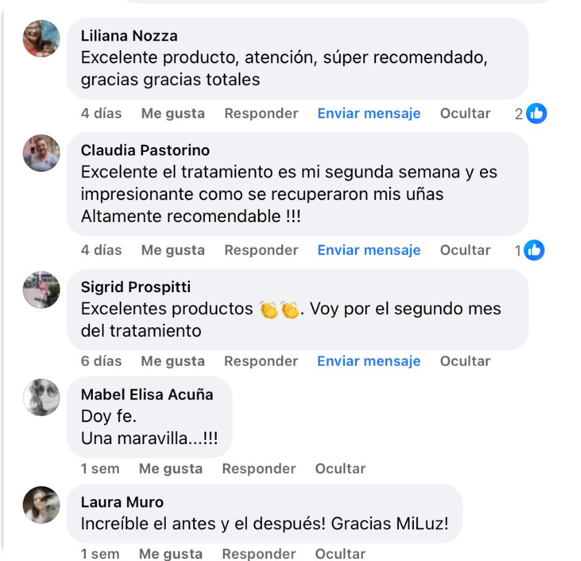
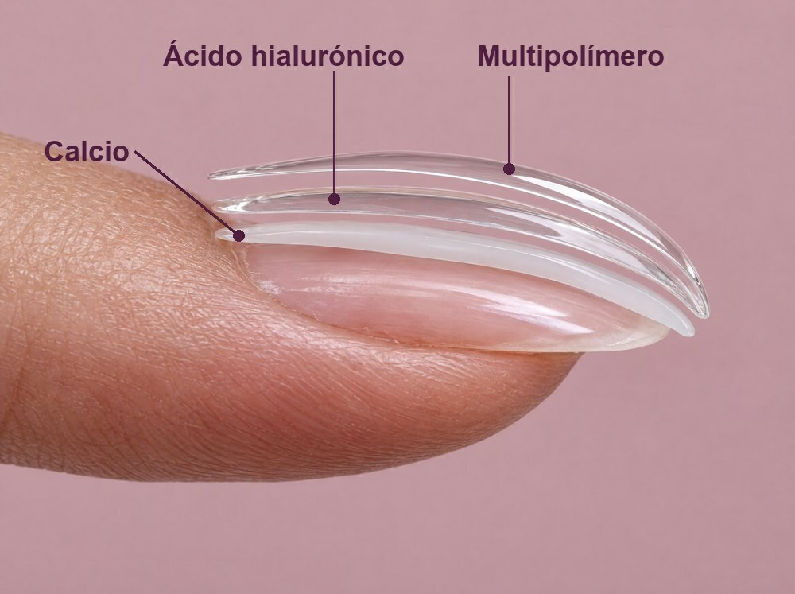
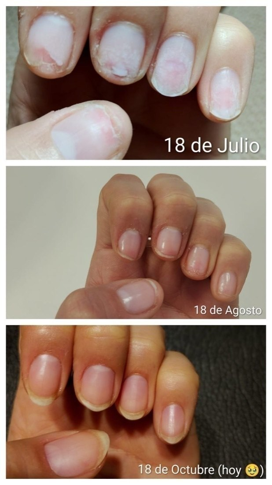
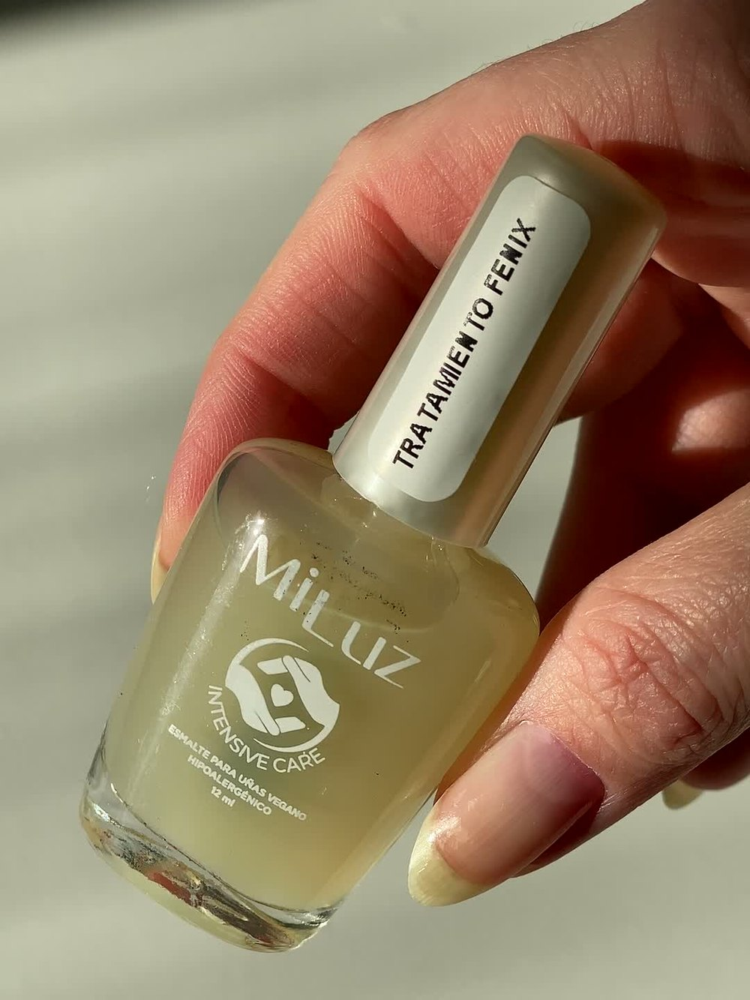
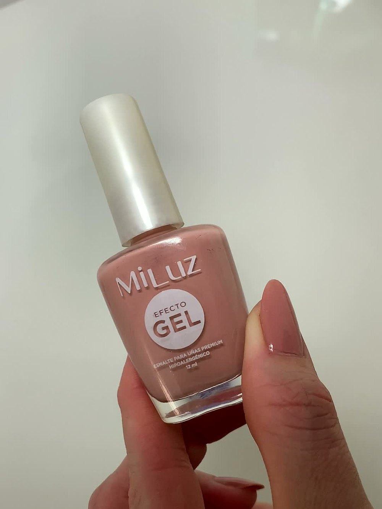
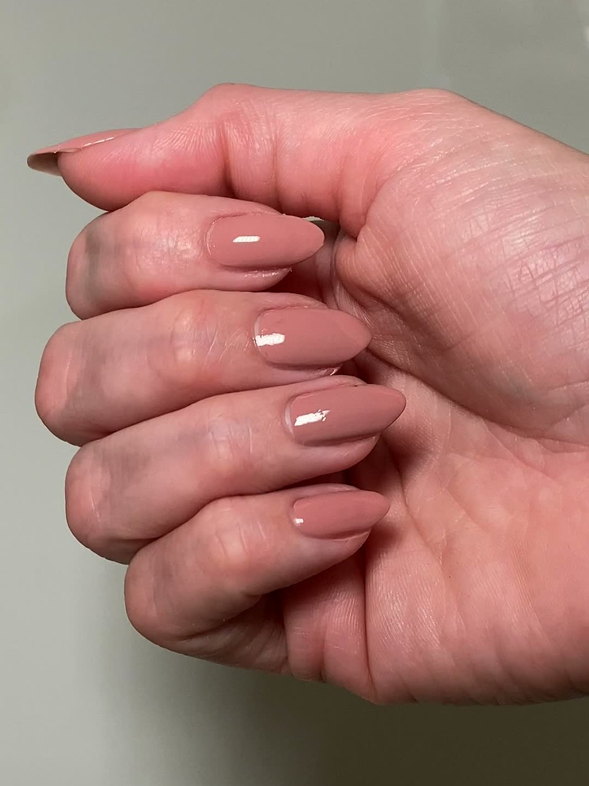

10 razones por las que este tratamiento está cambiando las uñas de las mujeres que las tienen débiles en 2026
Actualizado el 10 de noviembre de 2026
Resumen: si tus uñas se pelan o se quiebran, no es algo que tengas que aguantar. Fénix es un tratamiento hecho en Argentina para repararlas sin dejar el color.
Trae calcio, ácido hialurónico y provitamina B5, y un frasco te alcanza para 2 meses. Además incluye la Guía + Rutina de reparación de regalo, para que lo hagas bien desde el primer día.
Seguí leyendo y te contamos por qué cada vez más mujeres lo eligen.

“No puedo creer el cambio, a mi se me cortaban solas nunca las pude tener largas. Ahora no solo las tengo largas si no q tamb están duras no se me quiebran. Estoy feliz.”
Opinión de Mercado Libre · Ver en Mercado Libre ↗1. La fórmula correcta, con la rutina correcta
A esta clienta las uñas se le cortaban solas y nunca las había podido tener largas. Hoy cuenta que las tiene largas y duras, y que ya no se le quiebran.
¿Qué cambió? Todas seguimos una rutina con nuestras uñas, aunque no nos demos cuenta: o una rutina de no cuidado, o una rutina de cuidado. Ella empezó a seguir la rutina de cuidado que le indicamos, acompañada de Fénix, un dermorreparador ungueal con activos que trabajan sobre la base de la uña: mejoran su resistencia y su aspecto, y la acondicionan.
No es un producto mágico, ni fue de la noche a la mañana: fue la constancia de usar el producto correcto siguiendo la rutina adecuada, todos los días.
2. No es un esmalte: es un dermorreparador ungueal con Tecnología Multipolímero

Un esmalte común se queda en la superficie: da color y nada más. Fénix es otra cosa: es un dermorreparador ungueal, pensado para tratar la uña mientras la protege.
Su Tecnología Multipolímero forma una película flexible y adherente que se fija a la lámina y la acompaña con cada movimiento, sin quedar rígida ni quebrarse. Debajo de esa película trabajan sus activos: el calcio refuerza la uña desde la base, el ácido hialurónico le da la flexibilidad que necesita para doblarse en vez de partirse, y la provitamina B5 la acondiciona.
Y lo que no tiene también importa: es vegano, hipoalergénico y libre de 23 químicos agresivos.
3. El semi: el que todas eligen y el que más caro le sale a tu uña

Es lindo, dura y por eso es el que todas eligen. El problema no es el color: es el retiro.
Cada retiro con torno y cada limado se llevan una capita de tu uña. Un retiro, otro, otro más… y con el tiempo la lámina queda fina y frágil.
Y lo peor es arrancarlo: cuando se levanta y lo tirás, se lleva capas enteras. Es lo más agresivo que le podés hacer a tu uña.
Y algo que casi nadie te cuenta: el esmalte también puede durarte mucho. El color se adhiere bien y dura cuando la superficie de tu uña está sana, fuerte y pareja.
El problema es que tu uña está expuesta todos los días: agua, detergentes y productos de limpieza, golpes, el uso de las manos y, sobre todo, los retiros con torno, limado o arrancando el esmalte. Todo eso va dejando la lámina débil, fina y despareja. Y sobre una base así, el color no se agarra y se salta enseguida.
Por eso nos enfocamos tanto en reparar la base de la uña: Fénix va siempre abajo, y a medida que tu uña se recupera, el color se adhiere mejor y dura mucho más. Una buena duración es posible cuando la base está sana y pareja.
4. Tu uña, protegida todos los días
Lavar los platos, limpiar, lavarte las manos veinte veces por día, un golpe contra la mesa. Tu uña recibe agua, químicos y golpes todos los días, sin que te des cuenta.
Fénix forma una película flexible y de alta adherencia que la cuida como un guante: queda entre tu uña y todo eso.
Así, la uña que crece crece protegida.
5. Hecho específicamente para uñas débiles, finas o dañadas
Fénix está pensado específicamente para uñas débiles, finas o dañadas: las que se pelan en láminas, se quiebran en la punta o se doblan; las que quedaron finitas después de años de semi o kapping, y las que se debilitaron con la rutina de todos los días.
Se aplica sobre la uña limpia, sin esmalte, como primera capa. Y después, si querés, va el color encima.
6. Un frasco de 12 ml te alcanza para 2 meses y entra en cualquier cartera

Se usa muy poquito: una capa fina por uña alcanza.
Por eso un frasco de 12 ml te alcanza para 2 meses. Y es chiquito: entra en cualquier cartera, para tenerlo a mano también cuando salís.
7. «Lo veo en la consulta»
«Muchos pacientes llegan a mi consultorio diciendo: tengo las uñas muy frágiles, muy débiles, ¿qué puedo hacer?»
Sobre el semi, la Dra. Ruiz Beguerie es clara: el torno para sacarlo «te empieza a afinar las uñas y a darte fragilidad». Y lo mismo pasa con los limados repetidos. Y agrega: «es mucho más común de lo que crees».
Pero no te pide que renuncies a lo que te gusta:
«No necesitás necesariamente dejar de pintártelas si es lo que te gusta, necesitás cambiar tu estrategia.»
¿Qué significa cambiar la estrategia? Enfocarte en cuidar y tratar la base de tu uña. Porque una uña sana es una uña que adhiere mejor el color y que crece fuerte y resistente.
Para eso formulamos el Tratamiento Fénix: un dermorreparador ungueal con Tecnología Multipolímero. Forma una película flexible y adherente que protege la lámina del agua, los químicos y los golpes de todos los días, mientras sus activos trabajan desde la base: el calcio la refuerza, el ácido hialurónico le da flexibilidad para que se doble en vez de quebrarse y la provitamina B5 la acondiciona. Se aplica como primera capa y seca en segundos.
Y arriba va el color: Ultra Efecto Gel. Un color de alto poder cubritivo y acabado profesional, que seca rápido al aire y se retira de manera suave, con quitaesmalte sin acetona. Y a medida que tu uña está más sana y pareja, el color se adhiere mejor y tiene una mayor duración.
De Fénix destaca que «es hipoalergénico» y «es vegano». Y lo resume así: «Es fácil, nada complicado.»
8. Hecho en Argentina, vegano y cruelty free

MiLuz es una marca argentina. Sus fórmulas son veganas y cruelty free.
Y se elabora en un establecimiento habilitado ante ANMAT: Legajo del elaborador N.º 1740, inscripto según la Res. 155/98. Toda la información está en el envase.
9. Te acompañamos en todo el proceso
No te dejamos sola con un frasco. Con tu kit recibís de regalo la Guía + Rutina de reparación: te dice cómo aplicarlo, con qué frecuencia y qué hábitos cambiar para que tu uña deje de dañarse.
Y además tenés asesoramiento personalizado por WhatsApp durante toda la rutina: si tenés dudas o te da miedo cómo están tus uñas, nos mandás una foto y te acompañamos paso a paso.
El producto, la rutina y alguien que te guía, juntos.
10. No tenés que elegir entre uñas sanas o lindas

Esta es la parte que más nos gusta. Fénix va abajo y cuida tu uña. Ultra Efecto Gel va arriba y le da el color.
Tenés color desde el primer día, con acabado gel y brillo profesional. Seca rápido al aire y se retira con algodón y quitaesmalte sin acetona.
Sin lámpara. Sin torno. Sin limado. Tus uñas, lindas y cuidadas a la vez.